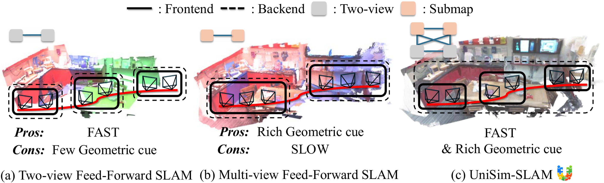
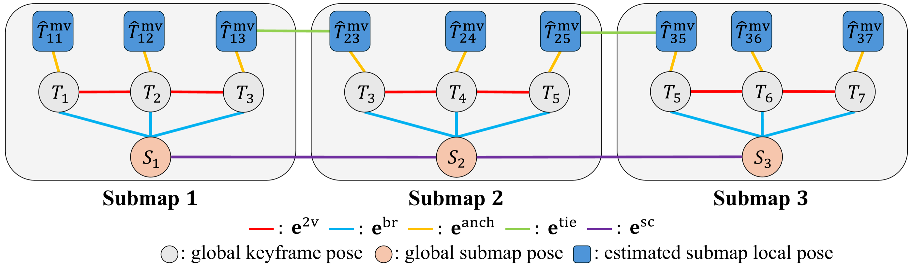
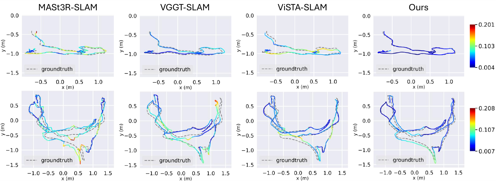
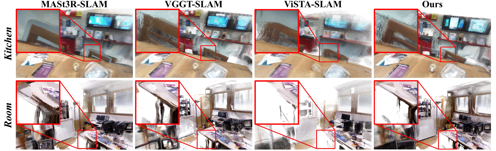

Overall Framework

Recent geometric foundation models enable feed-forward inference for SLAM, but their predictions are strongly dependent on the input view set, which leads to geometric inconsistencies and trajectory drift when results are chained over long sequences. Online deployment further exposes a trade-off between the low latency of two-view tracking and the constraint richness of multi-view inference.
UniSim-SLAM runs lightweight two-view keyframe tracking in the frontend and performs periodic multi-view submap refinement in the backend. To combine predictions defined in heterogeneous local coordinates with inconsistent scales, it formulates a unified multi-level factor graph on Sim(3) that jointly optimizes global keyframe poses and submap poses.

The key idea is to treat two-view and multi-view feed-forward predictions as complementary constraints rather than isolated outputs. Temporal two-view edges preserve immediate tracking connectivity, while multi-view submaps provide richer geometric anchors for long-term consistency.



Publication pending. BibTeX will be added after the paper is public.